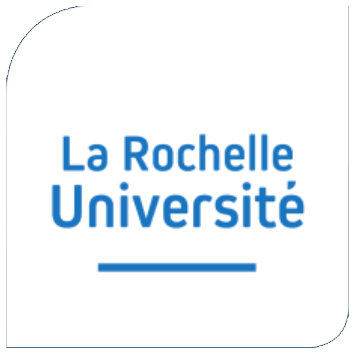
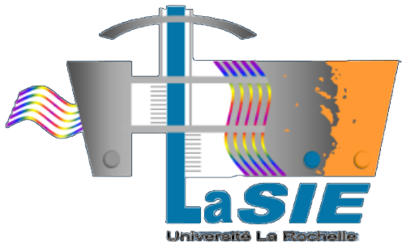
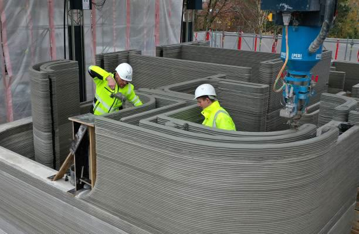
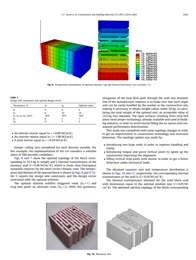
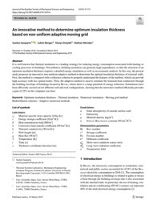
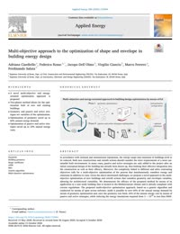
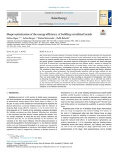
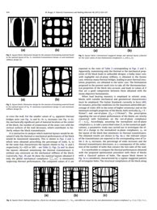
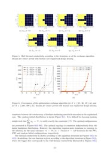

Seminar presentation - Pontifícia Universidade Católica do Paraná
20 August 2026
20 August 2026
Shape and insulation domain optimization regarding wall energy efficiency
William DUMONTAUD
Supervisors: Julien BERGER (LaSIE) · Benjamin KADOCH (IUSTI)
I am William DUMONTAUD and I have been a PhD student since 1st November 2024 at LaSIE.
- Supervisor:
Julien BERGER, CNRS researcher for LaSIE, UMR 7356. - Co-Supervisor:
Benjamin KADOCH, teacher-researcher for IUSTI, UMR 7343.
Funding: ANR JCJC 2023 TOPS (Optimisation topologique et de forme des parois opaques de bâtiments) project.
Sun and shadows on a street-canyon façade during one day.
Band 1 at the instant when the shadow edge crosses it; A: vertical cut.
- The surrounding buildings cast moving shadows on the façade.
- Sun, sky, ground and wind exchanges vary along the height and over time.
- ⇒ the wall is subject to heterogeneous boundary conditions in space and time.
The problem is 3D; each band is assumed uniform along its width ⇒ 2D vertical section (x, y).
Non-uniform conditions ⇒ a uniform wall does not use its material at best.
this thesis
1 Karashbayeva, Gasparin and Berger, “Optimisation of the insulation domain for heat transfer in building wall”, 2024.
2 Alpar et al., “Shape optimization of the energy efficiency of building retrofitted facade”, 2024.
2 Alpar et al., “Shape optimization of the energy efficiency of building retrofitted facade”, 2024.

On-site concrete 3D printing of a building (PERI printer).
- Large-scale 3D printing of concrete is now used for real buildings1.
- Complex geometries at almost no extra cost: curved faces, variable thickness, internal cavities.
- ⇒ Optimised wall shapes and insulation domains become buildable.
1 Gosselin et al., “Large-scale 3D printing of ultra-high performance concrete – a new processing route for architects and builders”, 2016.
Topology1

Topology3

Shape5

Shape6


Topology2Topology4

Topology72011
2013
2019
2020
2024
2025
1 Sousa et al., “Topology optimisation of masonry units from the thermal point of view using a genetic algorithm”, 2011.
2 Bruggi and Taliercio, “Design of masonry blocks with enhanced thermomechanical performances by topology optimization”, 2013.
3 Gasparin et al., “An innovative method to determine optimum insulation thickness based on non-uniform adaptive moving grid”, 2019.
4 Vantyghem et al., “Multi-material topology optimization involving simultaneous structural and thermal analyses”, 2019.
5 Ciardiello et al., “Multi-objective approach to the optimization of shape and envelope in building energy design”, 2020.
6 Alpar et al., “Shape optimization of the energy efficiency of building retrofitted facade”, 2024.
7 Karashbayeva, Gasparin and Berger, “Optimization of the insulation domain for heat transfer in building walls”, 2025.
None of these approaches combines:
- a two-dimensional wall model;
- the transient regime;
- boundary conditions varying in space and time;
- the continuity of the heat flux at the interface between two materials;
- optimisation of the shape and of the insulation domain together.
Aim of the thesis
Optimise the shape and the insulation domain of a wall in 2D and in transient regime, under realistic boundary conditions given by the building and its urban environment.
Optimise the shape and the insulation domain of a wall in 2D and in transient regime, under realistic boundary conditions given by the building and its urban environment.
1
2D wall models
- Transient heat conduction in 2D.
- Two materials with a curved interface (Ghost Fluid Method).
- Free shape of the external face.
➜
2
Realistic boundary conditions
- Co-simulation with Domus (building energy simulation).
- Urban scene: sun, shadows, long-wave exchanges, indoor zones.
➜
3
Optimisation
- Shape and insulation domain of the wall.
- Surrogate-based optimisation (kriging).
to be written
to be written
to be written
to be written
to be written
to be written
to be written
to be written
to be written
to be written
to be written
to be written